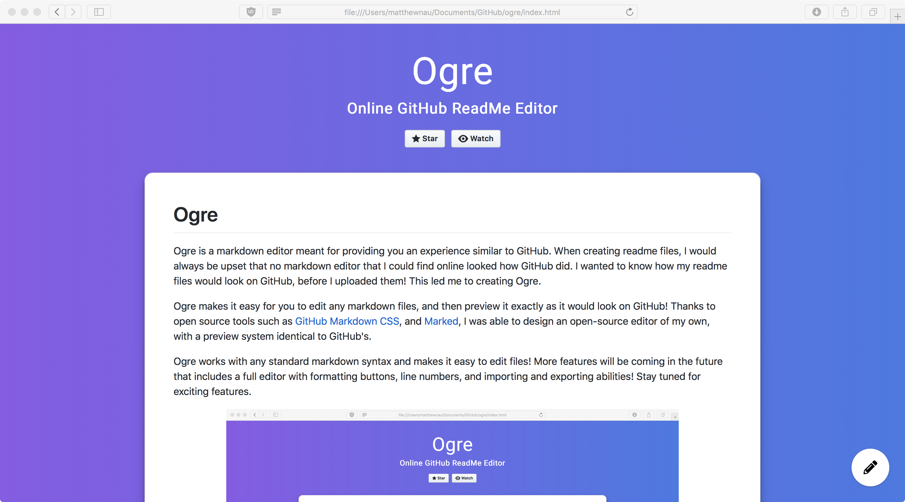

Ogre
Online GitHub ReadMe Editor
Star
Watch
# Ogre Ogre is a markdown editor meant for providing you an experience similar to GitHub. When creating readme files, I would always be upset that no markdown editor that I could find online looked how GitHub did. I wanted to know how my readme files would look on GitHub, before I uploaded them! This led me to creating Ogre. Ogre makes it easy for you to edit any markdown files, and then preview it exactly as it would look on GitHub! Thanks to open source tools such as [GitHub Markdown CSS](https://github.com/sindresorhus/github-markdown-css), and [Marked](https://github.com/markedjs/marked), I was able to design an open-source editor of my own, with a preview system identical to GitHub's. Ogre works with any standard markdown syntax and makes it easy to edit files! More features will be coming in the future that includes a full editor with formatting buttons, line numbers, and importing and exporting abilities! Stay tuned for exciting features. To begin editing, click the pencil icon in the bottom right corner of the screen! <p align="center">  </p> --- ## Product disclaimer This code is in no way affiliated with, authorized, maintained, sponsored or endorsed by GitHub or any of its affiliates or subsidiaries. This is an independent and unofficial product. Use at your own risk.